Abstract
Domain generalization in semantic segmentation faces challenges from domain shifts, particularly under adverse conditions. While diffusion-based data generation methods show promise, they introduce inherent misalignment between generated images and semantic masks. This paper presents FLEX-Seg (FLexible Edge eXploitation for Segmentation), a framework that transforms this limitation into an opportunity for robust learning. FLEX-Seg comprises three key components: (1) Granular Adaptive Prototypes that capture boundary characteristics across multiple scales, (2) Uncertainty Boundary Emphasis that dynamically adjusts learning emphasis based on prediction entropy, and (3) Hardness-Aware Sampling that progressively focuses on challenging examples. By leveraging inherent misalignment rather than enforcing strict alignment, FLEX-Seg learns robust representations while capturing rich stylistic variations. Experiments across five real-world datasets demonstrate consistent improvements over state-of-the-art methods, achieving 2.44% and 2.63% mIoU gains on ACDC and Dark Zurich. Our findings validate that adaptive strategies for handling imperfect synthetic data lead to superior domain generalization.
Key Contributions
- New Perspective on Synthetic Data: We reframe the inherent misalignment between diffusion-generated images and semantic masks as a useful learning signal rather than a limitation to be corrected.
- Granular Adaptive Prototypes (GAP): A prototype-based contrastive learning module that captures boundary representations across multiple thickness levels (thin, medium, thick) and semantic classes, enabling domain-invariant boundary learning.
- Uncertainty Boundary Emphasis (UBE): An entropy-based dynamic weighting mechanism that automatically amplifies supervision on uncertain boundary pixels without manual hyperparameter tuning.
- Hardness-Aware Sampling (HAS): A curriculum-style sampling strategy that progressively shifts from random to loss-based sampling, focusing training on challenging examples with complex structures or adverse conditions.
Key Observations
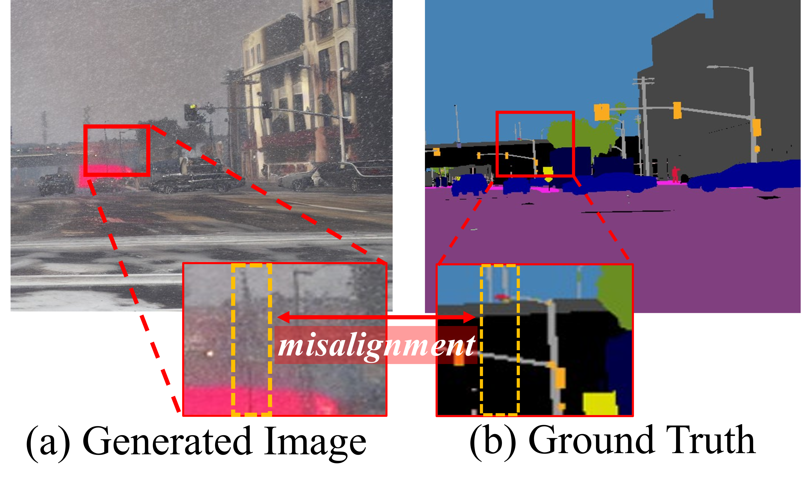
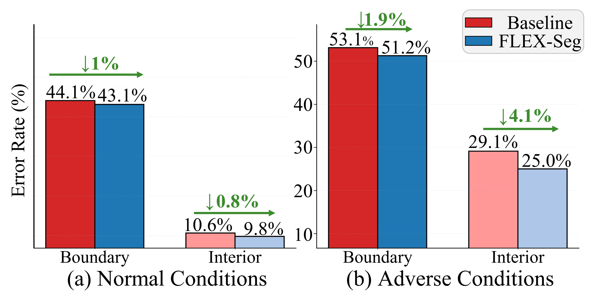
Diffusion-based generation improves domain generalization—but remains imperfect at boundaries.
- Reversed Generation Process: Unlike real datasets where masks are derived from images, diffusion methods generate images from masks. This reversed process inherently creates spatial misalignment between synthesized images and their semantic annotations.
- Boundary Error Amplification: Boundary regions consistently exhibit higher error rates than interior regions, with the gap becoming even more pronounced under adverse conditions (fog, snow, rain, nighttime).
- Adverse Condition Challenge: Poor visibility conditions naturally produce blurred boundaries and reduced contrast, making precise object delineation especially difficult for segmentation models.
- Assumption Breakdown: Existing boundary-aware methods assume perfect spatial correspondence between images and masks—an assumption that fundamentally breaks down with synthetic data.
💡 Key Insight: Both issues stem from the same root cause—boundary uncertainty—producing unreliable supervision at the most critical regions for segmentation.
🔍 Our Question: Can we leverage this noise instead of fighting it?
Motivation
How should we handle noisy boundary regions?
We tested four boundary handling strategies by adjusting the weight W(x,y) at boundary pixels in the loss function:
| Strategy | W(x,y) at boundary |
|---|---|
| Ignore | 0 |
| Reduce | α < 1 |
| Threshold | min(τ, ℒ) |
| Enhance | α > 1 |
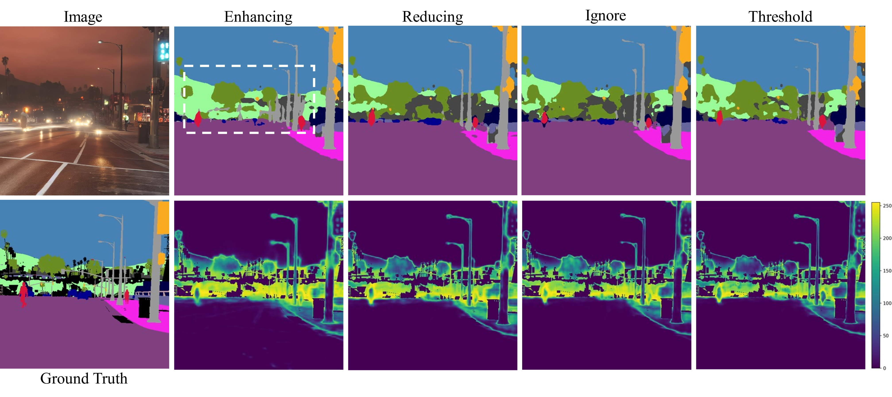
- The Enhance strategy consistently improved performance across all domains.
- By maintaining high entropy at uncertain boundaries while keeping low entropy in clear interiors, the model makes confident predictions where cues are clear, yet remains appropriately uncertain at challenging regions.
- Traditional approaches that ignore or reduce boundary weights fail to capture the rich stylistic variations present in synthetic data.
Key Insight: Adaptive boundary emphasis with uncertainty-aware learning leads to robust domain generalization.
Our Approach: Rather than enforcing strict alignment, we leverage inherent misalignment to learn more robust and transferable representations.
Method: FLEX-Seg Framework
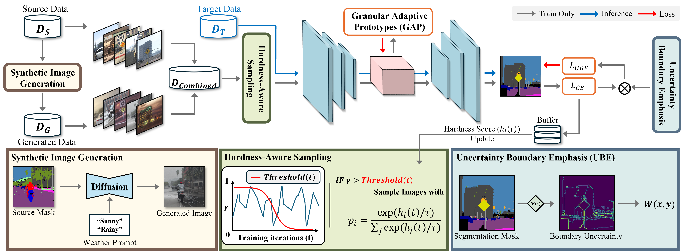
Overview of the FLEX-Seg framework integrating three key components for robust domain generalization.
Our framework transforms inherent misalignment in synthetic data into an opportunity for robust domain generalization through three synergistic components.
1. Granular Adaptive Prototypes (GAP)
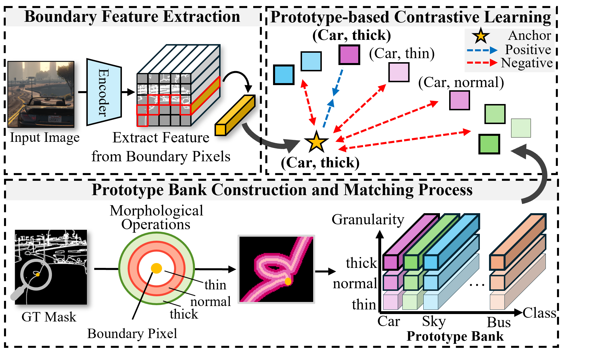
GAP addresses domain-invariant boundary representation learning through a novel two-dimensional coordinate system. Boundary pixels exhibit both geometric variations (thickness) and stylistic variations (environmental conditions), which we decompose into orthogonal dimensions.
- Multi-granular extraction: Generates three boundary masks (thin, medium, thick) through morphological operations to capture scale variability.
- Prototype bank: Constructs a structured memory of C × 3 × 256 prototypes organized by semantic class and boundary granularity.
- Contrastive learning: Aligns boundary features with matching class-granularity prototypes while separating from others, with imbalance-aware weighting.
2. Uncertainty Boundary Emphasis (UBE)
UBE dynamically emphasizes challenging boundary regions by leveraging prediction uncertainty, eliminating the need for manual hyperparameter tuning across diverse domains.
- Entropy-based weighting: Computes prediction entropy as an uncertainty indicator, where higher values correspond to ambiguous boundary regions.
- Adaptive emphasis: Amplifies loss contribution for uncertain pixels while maintaining standard gradients for confident predictions.
- Automatic adaptation: Naturally handles varying difficulty levels where adverse conditions present more uncertain boundary predictions.
3. Hardness-Aware Sampling (HAS)
HAS optimizes training efficiency by progressively focusing on challenging examples through an adaptive threshold mechanism.
- Hardness scoring: Maintains a hardness score for each training image, updated periodically using exponential moving average.
- Sigmoid decay scheduling: Gradually transitions from random to loss-based sampling as training progresses.
- Progressive focus: Ensures training stability in early stages while directing attention toward complex structures and adverse conditions later.
Qualitative Results
Visual comparison of segmentation results across different domains and conditions.
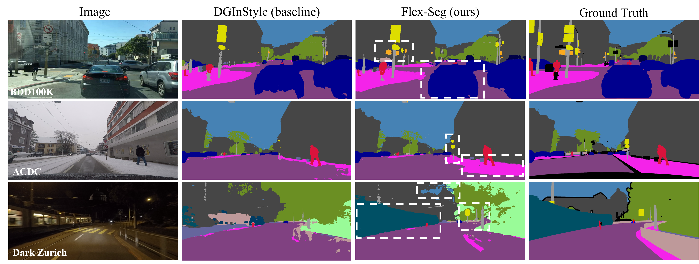
Overall comparison: FLEX-Seg produces more accurate boundaries compared to baseline methods.
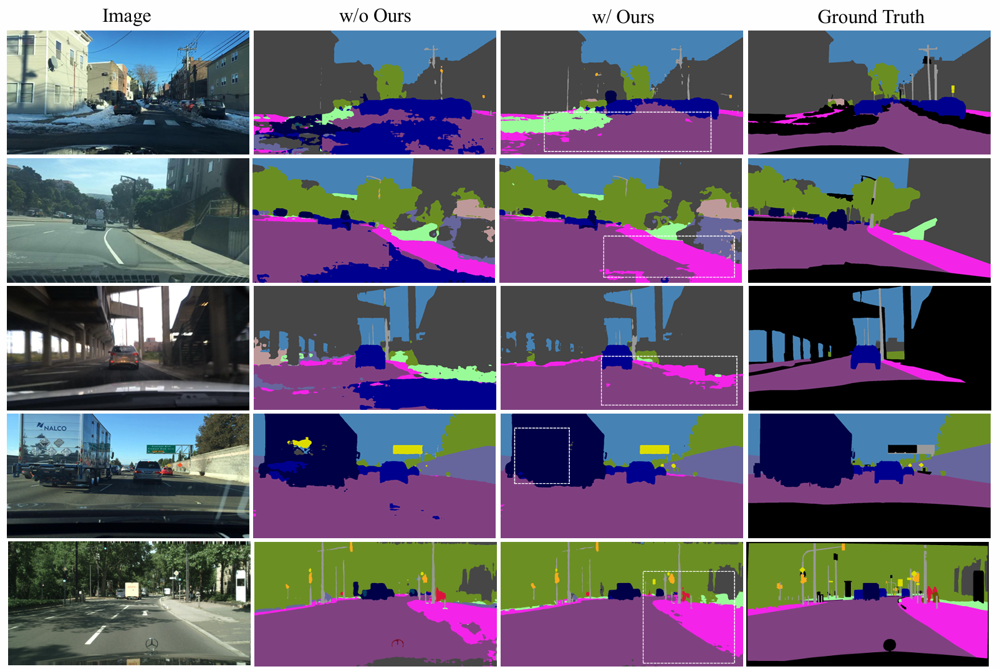
Results on standard driving scenarios (Cityscapes, BDD100K).
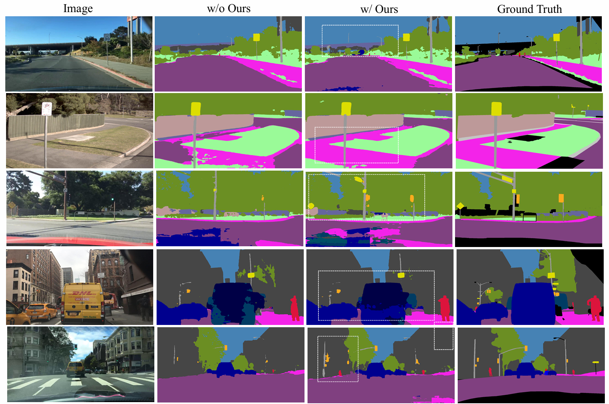
Additional results on standard driving scenarios showing improved boundary precision.
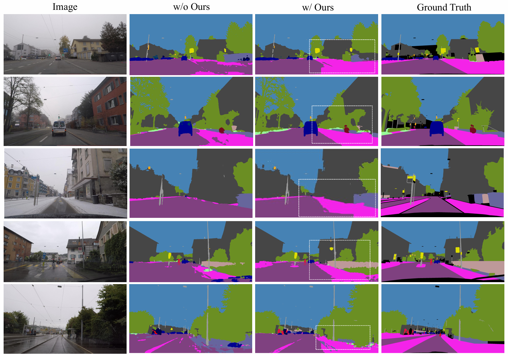
Results on ACDC: improved segmentation under fog, rain, snow, and nighttime conditions.
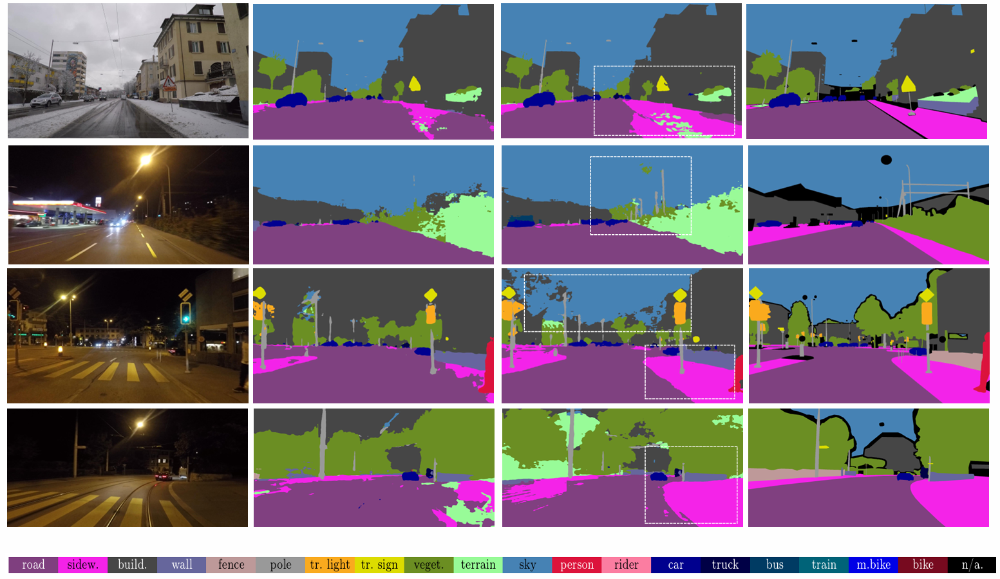
Additional ACDC results demonstrating robustness to various adverse weather conditions.
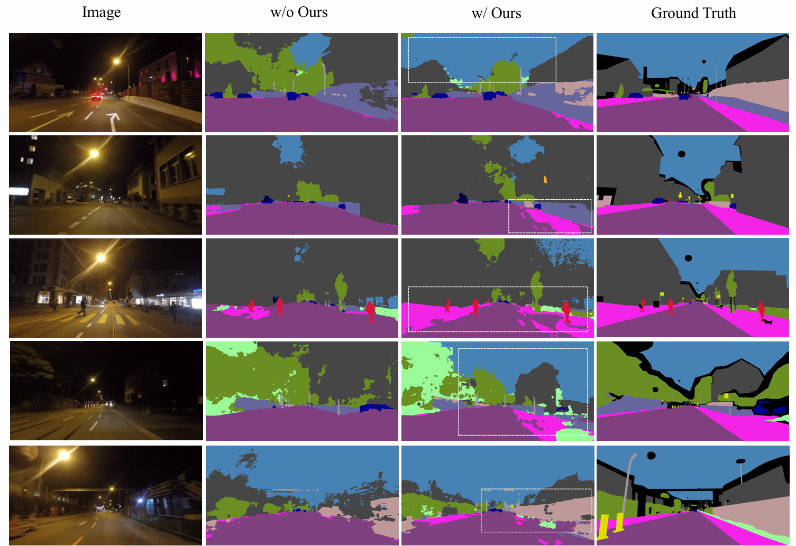
Results on Dark Zurich: accurate object delineation under challenging nighttime scenarios.
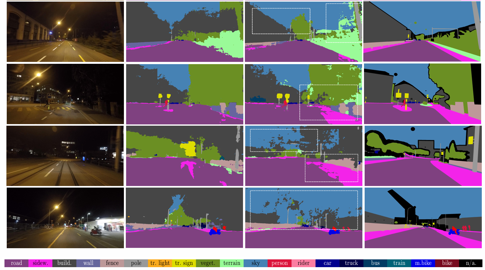
Additional Dark Zurich results showing consistent improvements in low-light conditions.
Quantitative Results
- Improves mIoU on adverse domains by +2.44% (ACDC) and +2.63% (Dark Zurich) over DGInStyle baselines.
- With MiT-B5 + DAFormer + DGInStyle, FLEX-Seg achieves 46.56% mIoU on ACDC, 29.51% on Dark Zurich, and 48.58% Avg5.
- With MiT-B5 + HRDA + DGInStyle, FLEX-Seg reaches 50.07% Avg5 and 38.34% Avg2.
- Ablation shows GAP +1.52% Avg2, UBE +0.24%, and full model +3.23% vs baseline.
| Backbone + Method | ACDC | Dark Zurich | Avg2 | Avg5 |
|---|---|---|---|---|
| MiT-B5 + DAFormer + DGInStyle | 44.04 | 25.58 | 34.81 | 46.47 |
| MiT-B5 + DAFormer + DGInStyle + FLEX-Seg | 46.56 | 29.51 | 38.04 | 48.58 |
| MiT-B5 + HRDA + DGInStyle | 46.07 | 25.53 | 35.80 | 48.99 |
| MiT-B5 + HRDA + DGInStyle + FLEX-Seg | 48.51 | 28.16 | 38.34 | 50.07 |
mIoU values reported in percent. See the paper for full comparison tables and additional backbone configurations.
BibTeX
@misc{Kim2025FLEXSeg,
title={Do We Need Perfect Data? Leveraging Noise for Domain Generalized Segmentation},
author={Taeyeong Kim and SeungJoon Lee and Jung Uk Kim and MyeongAh Cho},
year={2025},
eprint={2511.22948},
archivePrefix={arXiv},
primaryClass={cs.CV},
url={https://arxiv.org/abs/2511.22948}
}